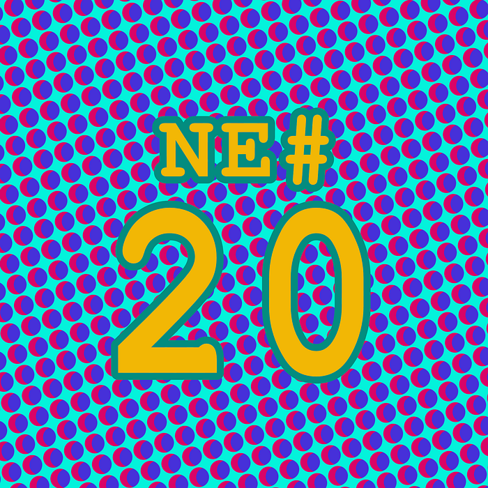

Die Nerd Enzyklopädie 20 - Elvis und Raumschiffe

Wer sich mit der Entwicklung von Software beschäftigt wird früher oder später über seltsam anmutende Abkürzungen stolpern mit denen sich ausufernder Programmcode zu einem kompakten Kunstwerk aufwerten lässt. Dazu zählen z.B. ternäre Operatoren, die langweilige **if-then-**Bedingungen in einfache Einzeiler verwandeln:
sAllGoodMan = foo == bar ? true : false;
Hier wird die boolesche Variable sAllGoodMan auf True gesetzt, wenn die Werte von foo und bar identisch sind, andernfalls ist sAllGoodMan = False.
Weitaus weniger bekannt ist die gehobene Variante des ternären Operators, der sogenannte Elvis-Operator, der nur aus einem Fragezeichen gefolgt von einem Doppelpunkt besteht:
?:
Und was kann der Elvis-Operator, außer gut aussehen und nicht singen? Er weist einer Variable einen Standard-Wert zu, wenn eine andere Variable Null oder Falsch ist:
myValue = aValue ?: „default“;
Wenn die Variable aValue nicht gesetzt wurde und damit Null oder Falsch ist (die Interpretation von „nicht gesetzt“ kann von der jeweiligen Programmiersprache abhängen), wird der Variable myValue der Standard-Wert default zugewiesen. Das funktioniert natürlich auch mit dem Rückgabewert von Funktionen:
Name = getName(‚id‘) ?: „John Doe“;
Kann kein Name ermittelt werden, wird als Standardname „John Doe“ verwendet.
Seinen Namen hat der Elvis-Operator von dem Fragezeichen, das zusammen mit dem Doppelpunkt ein Emoticon darstellt, das an Elvis Presley erinnern soll.
Eine andere weniger bekannte Abkürzung ist der Spaceship-Operator:
<==>
Dieser führt einen 3-Wege-Vergleich durch und heißt deswegen ganz offiziell eigentlich Drei-Wege-Vergleichsoperator. Der Spaceship-Operator erlaubt zwei Element auf drei Arten zu vergleichen, größer, kleiner oder gleich:
A < B, A == B, A > B
Der Spaceship-Operator fasst die drei Vergleiche zusammen und liefert -1 für kleiner, 0 für genau gleich groß und +1 für größer als zurück.
Die Verbindung zu einem Raumschiff geht angeblich auf das Spiel Star Trek von 1971 zurück — dort wurde ein Raumschiff genau so abgebildet: <==>.
Die Fraktion der StarWars-Fans sieht das anders. Dort wird behauptet, dass <==> eher an den Tie Fighter aus Star Wars erinnert.